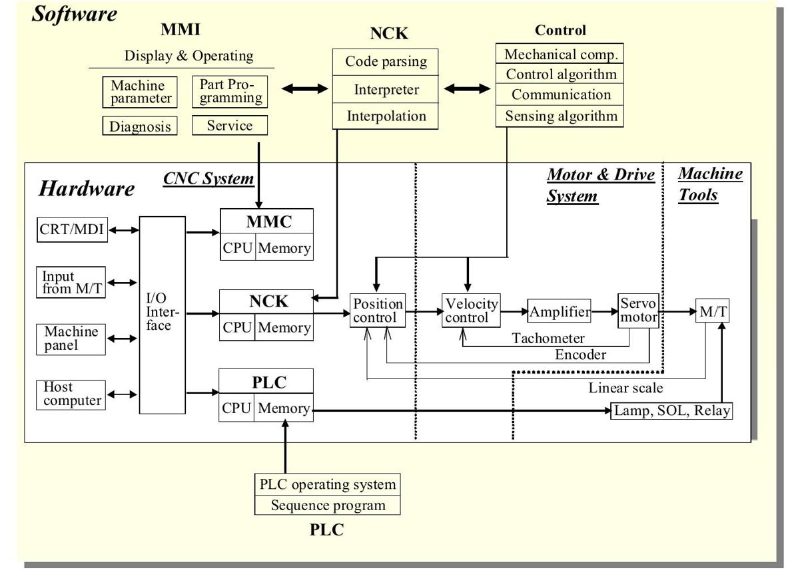

01_CNC_Arch - CNC architecture
1. Definition and purpose
Computer Numerical Control (CNC) is a system that controls machine-tool operations using a programmed sequence of instructions. These instructions define movements, speeds, positions, machining operations, and auxiliary functions.
A CNC system combines a numerical controller, machine-control software, axis and spindle drives, feedback devices, electrical interfaces, and mechanical machine components.
Typical CNC applications include:
- CNC turning and milling machines.
- Machining centres with automatic tool changers.
- Grinding machines.
- CNC drilling, boring, and tapping machines.
- Laser, plasma, and waterjet cutting systems.
- CNC-controlled transfer and special-purpose machines.
The main purpose of CNC is to execute repeatable, accurately coordinated machine operations while managing motion, process conditions, and auxiliary functions.
For industrial maintenance, understanding CNC architecture helps identify whether a fault originates in the CNC controller, servo drive, feedback system, PLC sequence, spindle system, communication network, or machine mechanics.
2. Basic CNC architecture

A simplified CNC architecture is shown below.
CNC PROGRAM / PART PROGRAM
|
v
CNC INTERPRETER / DECODER
|
v
INTERPOLATOR / MOTION PLANNER
|
v
AXIS AND SPINDLE COMMANDS
|
+-------+-------+
| |
v v
SERVO DRIVES SPINDLE DRIVE
| |
v v
SERVO MOTORS SPINDLE MOTOR
| |
v v
AXIS MECHANICS SPINDLE / TOOL
| |
+-------+-------+
|
v
MACHINE PROCESS
ENCODERS / POSITION FEEDBACK
|
v
CNC / DRIVES
CNC <----> PLC / MACHINE LOGIC
|
v
ATC, CLAMPS, LUBRICATION, COOLANT,
DOORS, HYDRAULICS AND AUXILIARIES
This is a functional overview. Actual machines may integrate the PLC into the CNC, use distributed I/O, place feedback interfaces inside the drives, or distribute motion functions across several processors.
3. Main components of CNC architecture
3.1 CNC controller
The CNC controller is the central control system responsible for interpreting the part program and coordinating machine motion.
Typical functions include:
- Reading and interpreting CNC program blocks.
- Calculating commanded positions and velocities.
- Coordinating multiple axes.
- Managing tool paths and machining cycles.
- Monitoring following error and axis status.
- Communicating with servo and spindle drives.
- Exchanging machine-state information with the PLC.
- Reporting alarms, operating states, and diagnostics.
Examples of CNC control platforms include:
- Siemens SINUMERIK
- FANUC CNC
- Mitsubishi M800/M80
- HEIDENHAIN TNC
Different platforms use different programming dialects, parameter structures, diagnostic interfaces, and commissioning procedures.
3.2 Human-machine interface
The CNC operator panel provides the interface for operating, programming, monitoring, and diagnosing the machine.
Common functions include:
- Program selection and editing.
- Manual jogging and handwheel operation.
- Automatic, single-block, and other supported operating modes.
- Tool and work-offset management.
- Alarm display and diagnostic screens.
- Machine-position and coordinate displays.
- Overrides for feed, rapid movement, and spindle speed where supported.
The operator panel is not necessarily the CNC controller itself. Some machines have a separate industrial PC or display terminal connected to the controller.
3.3 PLC or machine logic controller
The PLC handles machine-sequencing and auxiliary functions that must occur in coordination with CNC operations.
Examples include:
- Automatic tool changer (ATC).
- Hydraulic and pneumatic clamps.
- Coolant pumps and valves.
- Lubrication systems.
- Door and guard interlocks.
- Part-present sensors.
- Pallet changers.
- Machine-ready and cycle-complete signals.
On many CNC machines, the CNC and PLC exchange signals such as cycle start, machine ready, axis status, tool-change request, and sequence-complete status.
The division of responsibility varies by machine. Some motion-related functions are handled by the CNC, while the PLC sequences the supporting mechanisms.
3.4 Servo drives and servo motors
Servo drives control the motion of individual feed axes.
Typical functions include:
- Regulating motor current and torque.
- Controlling velocity and position through the supported control architecture.
- Processing feedback from encoders or other position sensors.
- Reporting drive faults and operating status.
- Executing supported tuning and diagnostic functions.
The CNC supplies motion commands, while the servo drive and feedback system execute and regulate the physical movement.
For example, on a milling machine, the X, Y, and Z axes may each have a servo motor and drive. The CNC coordinates them to follow the programmed tool path.
3.5 Spindle drive and spindle motor
The spindle system rotates the cutting tool or workpiece, depending on the machine type.
Typical functions include:
- Controlling spindle speed.
- Managing acceleration and deceleration.
- Supporting spindle orientation where available.
- Reporting overload, overtemperature, and drive faults.
- Supporting rigid tapping or other coordinated operations when the system is designed for them.
The spindle system differs from an ordinary feed axis because it must meet machining requirements involving rotational speed, torque, cutting load, and sometimes angular positioning.
3.6 Feedback devices
Feedback devices provide information about actual machine movement.
Examples include:
- Rotary encoders on servo motors.
- Direct linear scales on machine axes.
- Spindle encoders.
- Reference or home sensors.
- Limit switches.
- Tool and machine-position sensors.
Feedback architecture varies. A machine may use motor-mounted encoders, direct measuring systems, or both. A motor encoder measures motor rotation, while a direct linear scale measures position closer to the machine's actual moving element.
This distinction matters when diagnosing errors caused by backlash, transmission compliance, or mechanical slip.
3.7 Machine mechanics
The mechanical system converts motor motion into physical movement.
Common elements include:
- Ball screws and nuts.
- Linear guideways.
- Gearboxes and couplings.
- Belt drives.
- Rotary tables.
- Spindle bearings.
- Tool changers and tool-holding mechanisms.
- Machine frames and structural assemblies.
A CNC controller can calculate a precise command, but mechanical wear, backlash, thermal expansion, or structural deformation can still cause actual machining errors.
4. CNC control layers
CNC architecture can be understood as a hierarchy of control responsibilities.
| Layer | Main responsibility | Example |
|---|---|---|
| Part program | Defines the intended machining operation | Tool path, feed rate, spindle speed |
| CNC interpreter | Converts program blocks into executable operations | Interpreting G-code and M-code |
| Motion planner/interpolator | Generates coordinated trajectories | Coordinated X/Y/Z movement |
| Axis control | Regulates commanded axis movement | Position tracking |
| Servo drive control | Controls motor torque/current and supported motion loops | Motor current regulation |
| PLC machine sequence | Coordinates auxiliary machine operations | Tool change and clamping |
| Feedback system | Reports actual position, speed, or state | Encoder and linear-scale measurements |
| Machine mechanics | Produces physical motion and machining | Ball screw, spindle, table, and tooling |
These layers are conceptually distinct even when implemented in integrated hardware or software.
5. CNC program, G-code, and M-code
CNC programs commonly use words and address codes to specify movement and machine functions.
5.1 G-code
G-codes generally specify motion modes, coordinate interpretation, machining cycles, or other preparatory functions.
Examples commonly found in many CNC dialects include:
G00: Rapid positioning.G01: Linear interpolation at a programmed feed.G02: Circular interpolation clockwise under the active plane and coordinate conventions.G03: Circular interpolation counterclockwise under the active plane and coordinate conventions.G90: Commonly absolute programming.G91: Commonly incremental programming.
The exact interpretation depends on the controller dialect, active modes, and machine configuration.
5.2 M-code
M-codes commonly control auxiliary machine functions.
Examples include:
M03: Spindle clockwise.M04: Spindle counterclockwise.M05: Spindle stop.M06: Tool change on many machining centres.M08: Coolant on in many configurations.M09: Coolant off in many configurations.M30: Program end and reset on many controls.
M-code behaviour is particularly machine-dependent because the CNC often uses PLC logic to perform the actual auxiliary sequence.
Important: These are common examples, not universal definitions. Verify the controller manual and the machine builder's documentation before editing or executing a production program.
6. Interpolation and coordinated motion
Interpolation is the process of generating intermediate motion commands between programmed points.
Consider a milling machine moving from one coordinate to another.
Start point End point
(X0, Y0) --------------------> (X100, Y50)
^
|
Coordinated axis movement
If the tool must follow a straight line, the CNC coordinates the axis commands so the resulting tool path follows that line within the system's control and machine limitations.
Common interpolation types include:
- Linear interpolation: Straight-line motion.
- Circular interpolation: Circular motion in the selected plane.
- Helical interpolation: Combined circular and linear movement.
- Multi-axis interpolation: Coordinated movement across several axes.
Interpolation is essential because independent axis movements do not automatically produce the intended tool path. The controller must coordinate their timing and positions.
7. CNC axes and coordinate systems
CNC axes describe the machine's controlled directions of movement.
Typical linear axes are X, Y, and Z. Rotary axes are commonly identified by A, B, and C, corresponding to rotation about the X, Y, and Z axes respectively under conventional naming.
Coordinate systems commonly include:
- Machine coordinates: Referenced to the machine's defined coordinate system.
- Work coordinates: Referenced to the workpiece or a programmed work offset.
- Tool coordinates: Used for tool geometry and tool orientation where supported.
- Local or transformed coordinates: Used for specific programmed operations or supported coordinate transformations.
Machine zero, reference return, work zero, and tool offsets are not interchangeable concepts. Their configuration affects positioning accuracy and program interpretation.
Detailed axis behaviour, homing, travel limits, and coordinate systems will be studied in the next topic, 02_Axes - Axes.
8. CNC and PLC interaction
The CNC and PLC cooperate to execute a complete machining cycle.
For example, a tool-change sequence may involve:
- CNC requests a tool change.
- PLC verifies required machine conditions.
- PLC commands the spindle or tool mechanism to reach the required state.
- Tool changer mechanisms execute the supported sequence.
- Sensors confirm intermediate positions.
- PLC reports sequence completion or an error.
- CNC resumes the program when the required conditions are satisfied.
The precise signal names and sequence vary by machine builder.
Example of a failed tool change
Suppose the CNC displays a tool-change timeout.
Possible causes include:
- A proximity sensor does not change state.
- The tool arm does not reach its required position.
- Pneumatic or hydraulic pressure is insufficient.
- The spindle orientation condition is not satisfied.
- A PLC interlock is missing.
- A communication or I/O fault prevents the expected status from reaching the controller.
The diagnostic task is to identify which step failed and what condition prevented the sequence from progressing. Replacing the CNC controller before checking the PLC sequence and sensor feedback would be a rather expensive way to avoid reading the diagnostics.
9. CNC feedback and closed-loop control
A CNC axis commonly uses closed-loop control to compare commanded movement with measured movement.
Commanded position
|
v
Position error <---------------- Actual position
| ^
v |
Motion control |
| |
v |
Servo drive |
| |
v |
Servo motor |
| |
v |
Mechanical axis |
| |
v |
Encoder / scale ----------------------+
The controller or drive uses the difference between the command and measured position to regulate the axis, according to the control architecture.
Potential feedback-related problems include:
- Encoder or linear-scale faults.
- Incorrect feedback configuration.
- Damaged cables or connectors.
- Electrical interference.
- Mechanical backlash or slip.
- Incorrect axis scaling.
- Following-error limits being exceeded.
An axis can have correct electrical feedback at the motor while the actual tool position is still affected by mechanical errors downstream of the encoder.
10. CNC operating modes
Common operating modes include the following, though names and behaviour differ across controllers.
| Mode | Purpose |
|---|---|
| Automatic / AUTO | Executes a stored CNC program |
| Manual / JOG | Allows operator-commanded movement |
| Reference return / REF | Establishes the required reference position |
| MDI | Executes manually entered blocks or commands |
| Single block | Executes program blocks one at a time |
| Teach or setup modes | Supports specific setup operations on applicable systems |
Mode selection determines which operations are permitted. It does not, by itself, establish that the machine is safe for movement.
Follow the machine's operating procedure and safety requirements when jogging axes, executing MDI commands, or testing programs.
11. CNC alarms and diagnostics
CNC diagnostics commonly span several subsystems.
| Alarm category | Typical examples | Diagnostic direction |
|---|---|---|
| CNC program | Invalid command, format error, unsupported code | Inspect program syntax, active modes, and controller dialect |
| Axis | Reference not established, travel limit, following error | Check axis state, position, limits, and feedback |
| Servo drive | Overcurrent, encoder fault, overheating | Read drive-specific diagnostics |
| Spindle | Spindle drive fault, speed deviation, orientation failure | Inspect spindle drive, feedback, and mechanical condition |
| PLC sequence | Tool-change timeout, clamp not confirmed | Trace PLC sequence and input/output states |
| Communication | Drive offline, fieldbus error | Check network state, configuration, and device diagnostics |
| Safety | Guard condition, STO active, safety-related stop | Use approved safety-system diagnostics |
| Machine mechanics | Binding, backlash, abnormal vibration | Inspect mechanics and compare command with physical response |
A reliable CNC diagnostic sequence
- Record the exact alarm number and description.
- Determine which subsystem reported it.
- Identify the operating phase when it occurred.
- Review preceding alarms and the machine's diagnostic state.
- Check the relevant command, feedback, interlock, or mechanical condition.
- Confirm the root cause before replacing hardware.
- Validate the repair and record the result.
12. CNC architecture in industrial maintenance
A CNC machine contains many systems that must cooperate correctly. Maintenance teams should separate their responsibilities while understanding the interfaces between them.
| Maintenance area | Typical responsibility |
|---|---|
| CNC controller | Program execution, motion coordination, controller diagnostics |
| PLC and I/O | Sequence logic, sensors, actuators, machine interlocks |
| Servo drives | Feed-axis motion and drive diagnostics |
| Spindle system | Spindle motor, speed control, orientation, related feedback |
| Feedback | Encoder and scale signals, cables, connectors, configuration |
| Electrical system | Power distribution, grounding, protection, electrical connections |
| Mechanical system | Ball screws, guideways, bearings, couplings, transmission |
| Tooling and process | Tool condition, offsets, cutting conditions, workholding |
The best fault-isolation strategy follows the evidence across these interfaces. For example, a position error may require simultaneous examination of the CNC command, servo-drive response, encoder data, and mechanical transmission.
13. Common CNC architecture mistakes
Mistake 1: Treating the CNC and PLC as the same thing.
They may be integrated, but their functions remain distinguishable. CNC functions focus on numerical program execution and coordinated motion, while PLC functions commonly handle machine sequencing and auxiliary logic.
Mistake 2: Assuming every movement command comes directly from the PLC.
On many systems, the CNC generates and coordinates feed-axis trajectories, while the PLC supplies machine-sequence conditions and auxiliary commands.
Mistake 3: Assuming a drive alarm always originates in the drive.
The drive may be responding to an external condition such as a mechanical obstruction, invalid feedback, or unsuitable command.
Mistake 4: Confusing motor position with actual tool position.
The encoder may measure motor rotation, while backlash, screw errors, compliance, and thermal changes affect the final machine position.
Mistake 5: Treating G-code and M-code as universal across all machines.
Controller dialects and machine-builder implementations differ. Production programs must be checked against the applicable manuals.
Mistake 6: Replacing hardware before tracing the signal path.
A missing PLC permissive, sensor state, or communication condition can prevent movement even when the CNC and drives are healthy.
14. Interview questions and answers
1. What is CNC?
Computer Numerical Control is the use of a computer-based controller to execute programmed machine operations, including coordinated movement and auxiliary functions.
2. What are the main components of a CNC system?
CNC controller, operator interface, PLC or machine logic, servo drives, motors, spindle system, feedback devices, and machine mechanics.
3. What is the role of the CNC controller?
It interprets the part program, plans and coordinates movement, monitors axis performance, and communicates with the drives and machine-control system.
4. What is the role of the PLC in a CNC machine?
It commonly controls machine sequencing and auxiliary functions such as tool changing, clamping, coolant, lubrication, and interlocks.
5. What is interpolation?
The calculation of coordinated intermediate movement commands so axes follow a specified path, such as a straight line or circular arc.
6. What is the difference between G-code and M-code?
G-codes commonly specify motion or machining modes, while M-codes commonly request auxiliary machine functions. Actual meanings depend on the controller and machine.
7. What is the role of a servo drive in CNC?
It regulates motor movement according to the supported control architecture and reports feedback and drive status.
8. What is the difference between a servo axis and a spindle?
A feed servo axis typically controls machine position and coordinated path movement. A spindle system primarily controls rotation and cutting-related speed or torque, although some spindles also support precise orientation and coordinated operations.
9. Why does a CNC machine need feedback?
Feedback enables the control system to compare commanded and actual movement and detect deviations or faults.
10. What is following error?
The difference between commanded and measured position, according to the controller's sign convention and scaling.
11. What is the difference between machine zero and work zero?
Machine zero belongs to the machine's defined coordinate system. Work zero is a reference associated with the workpiece or work coordinate system.
12. Why can a tool-change alarm originate in the PLC?
The tool-change operation commonly depends on a PLC-controlled sequence of actuators, sensors, and interlocks. A missing condition can prevent completion.
13. Why may a CNC report a position error when the motor is healthy?
The cause may be mechanical obstruction, backlash, transmission slip, feedback configuration, excessive load, or control settings rather than a motor defect.
14. What is the difference between CNC program execution and machine sequencing?
Program execution interprets machining instructions and coordinates the tool path. Machine sequencing coordinates supporting operations such as clamping, tool changing, and coolant control.
15. Why is CNC architecture important in maintenance?
It helps isolate faults to the correct subsystem and understand how commands, feedback, interlocks, and mechanical motion interact.
16. Does a CNC alarm identify the root cause automatically?
Not necessarily. It identifies a detected condition or failure state. The root cause must be established from diagnostics, measurements, and inspection.
15. Practical exercises
Exercise 1: Trace a commanded movement
A CNC program commands the X-axis to move 100 mm, but the axis does not move.
Identify the checks in this order:
- Program execution and active operating mode.
- CNC axis command and status.
- PLC permissives and safety-related status.
- Servo enable and drive alarms.
- Feedback and mechanical conditions.
Explain what evidence would identify the subsystem preventing movement.
Exercise 2: Diagnose a tool-change timeout
The CNC requests a tool change, but the sequence never completes.
List the PLC states, sensor inputs, actuator outputs, pressure conditions, spindle-orientation status, and interlocks that may need inspection.
Explain how to determine the exact step where the sequence stops.
Exercise 3: Distinguish command and feedback faults
A CNC axis reports following error during acceleration.
Describe the command, actual position, velocity, torque/current, and alarm data required to determine whether the problem is related to the trajectory, drive response, feedback, or mechanics.
Exercise 4: Trace a communication fault
A CNC reports that a servo drive is unavailable.
Build a diagnostic path from controller diagnostics through network or fieldbus status, drive readiness, and relevant power and communication checks.
Do not assume that the drive itself has failed until the evidence supports that conclusion.
Exercise 5: Draw the architecture of a real CNC machine
Using the machine's available documentation, identify:
- CNC controller and operator panel.
- PLC or machine logic controller.
- Feed-axis servo drives and motors.
- Spindle drive and motor.
- Encoders or linear scales.
- Remote I/O and fieldbus.
- Tool changer and auxiliary mechanisms.
- Safety system and machine interlocks.
Record the actual communication and feedback paths. This becomes a useful reference when diagnosing faults on that machine.
16. Final mental model
- CNC controller: Interprets the program and coordinates numerical motion.
- PLC: Coordinates machine sequences and auxiliary functions.
- Servo drive: Regulates feed-axis motor behaviour.
- Spindle drive: Controls spindle operation.
- Feedback system: Reports actual movement and operating state.
- Machine mechanics: Convert controlled motor output into physical tool or workpiece movement.
- Diagnostics: Connect the observed symptom to the subsystem and evidence needed to identify the cause.
A CNC machine is not a single controller. It is a coordinated system of software, electronics, feedback, and mechanics. Understanding its architecture makes fault isolation faster and prevents replacing healthy components while the actual fault remains untouched.
Next topic
02_PLAN_WISE_2026\02_INDUSTRY3_0\02_Auto_Tech\07_CNC\02_Axes
02_Axes - Axes